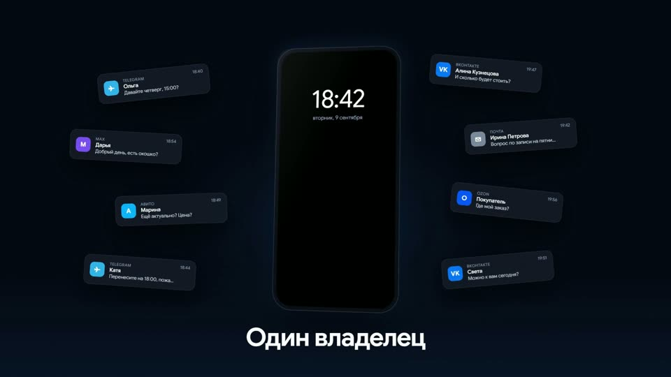
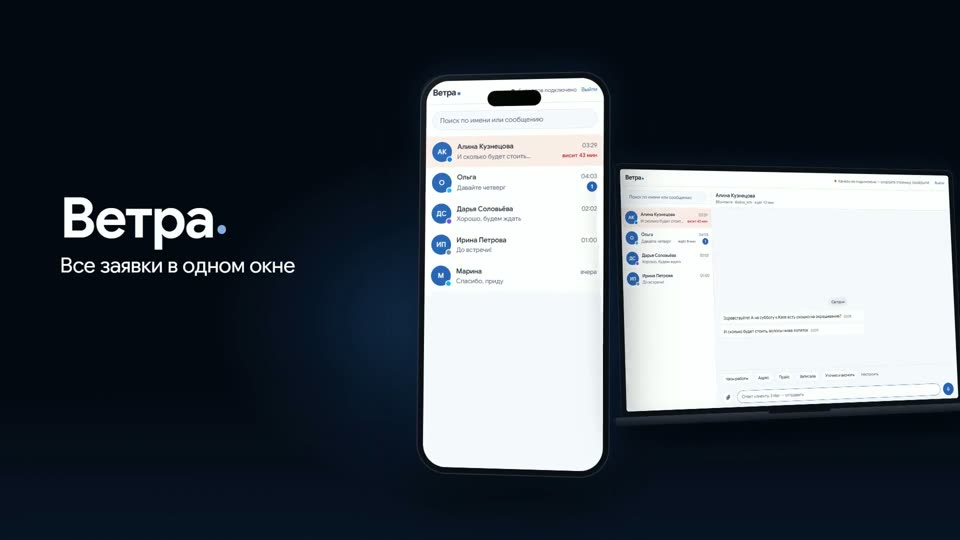
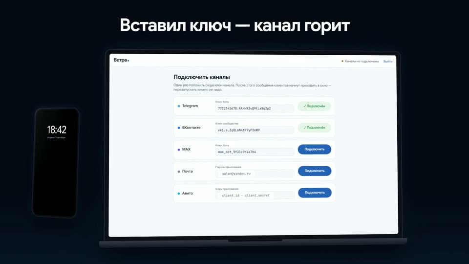
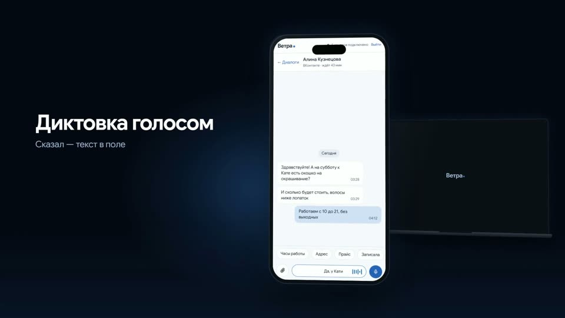
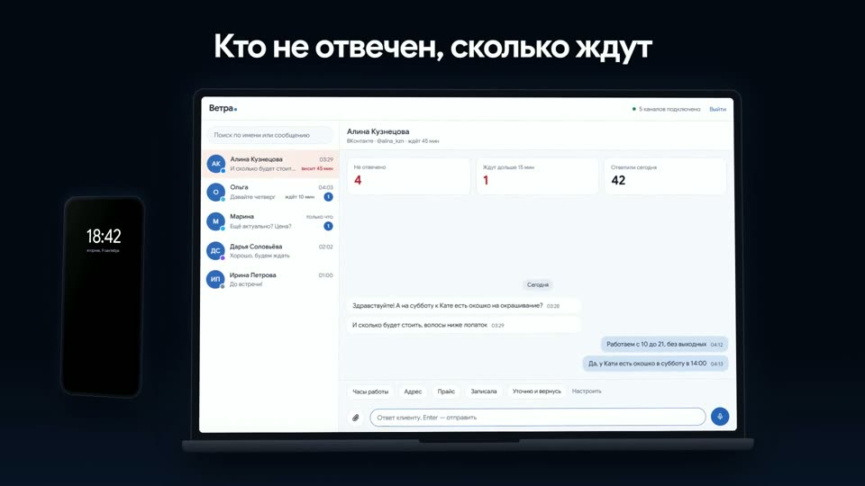
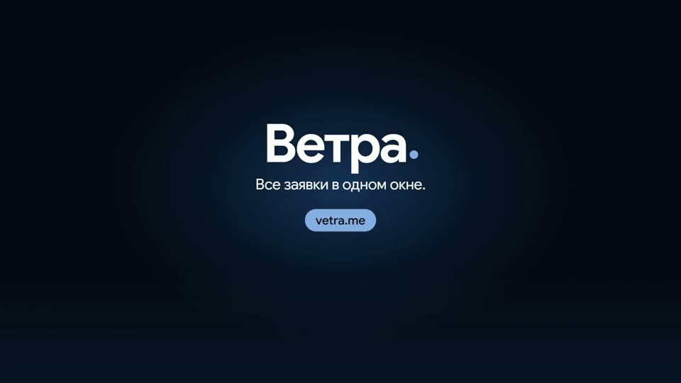

Ролик Ветры — разбор по сценам
Шесть сцен ролика 78 с и hero-цикл. Нажми на кадр или «смотреть с …» — видео перемотается на начало сцены. Правки можно диктовать так: «сцена 3 — …».

Хаос
Телефон один в темноте, на него сыплются 12 уведомлений из шести приложений: Telegram, ВКонтакте, MAX, Почта, Авито, Ozon. Экран тёмный, только время 18:42.
- 1,2 сШесть приложений
- 4,4 сОдин владелец
- 7,4 сКлиент ждёт 43 минуты

Имя
Карточки втягиваются в телефон, экран загорается окном Ветры. Телефон уходит вправо, из-за него выезжает ноутбук. Свечение вспыхивает, вступает музыка.
- 11,0 сВетра·
- 11,6 сВсе заявки в одном окне

Подключение
Ноутбук по центру, страница «Подключить каналы». Ключ Telegram набирается посимвольно, «Подключить», статус зелёный. Дальше ВКонтакте, MAX, Почта, Авито. В шапке «5 каналов подключено».
- 17,6 сПодключение за минуты
- 22,5 сВставил ключ — канал горит
- 28,8 сПять каналов. Одно окно.

Телефон
Телефон крупно. Список → диалог Алины → заготовка «Часы работы» → диктовка голосом «Да, у Кати есть окошко в субботу в 14:00» → отправка → «отвечено» → возврат к списку без красной метки.
- 33,0 сОдно окно на телефоне
- 37,2 сБыстрые ответы
- 41,4 сДиктовка голосом
- 47,0 сОтвечаешь одной рукой

ПК
То же окно на ноутбуке с панелью владельца: «Не отвечено 3», «Ждут дольше 15 мин 1», «Ответили сегодня 42». Приходит «Марина · Авито», плитка 3 → 4. Алина отвечена, 4 → 3, ожидание 1 → 0.
- 53,0 сТо же окно на ПК
- 57,5 сКто не отвечен, сколько ждут
- 63,0 сПанель владельца

Финал
Устройства уходят в темноту. Имя крупно, слоган, адрес. Свечение собирается в центр, затемнение, музыка затухает.
- 69,2 сВетра·
- 70,2 сВсе заявки в одном окне.
- 72,5 сvetra.me

Фон в hero лендинга
Телефон впереди слева, ноутбук сзади справа, медленный облёт камеры. На ноутбуке въезжает новый диалог «Ольга · Telegram» и гаснет счётчик; на телефоне нажата заготовка и появляется пузырь. Склейка цикла незаметна.
▶ открыть hero-цикл